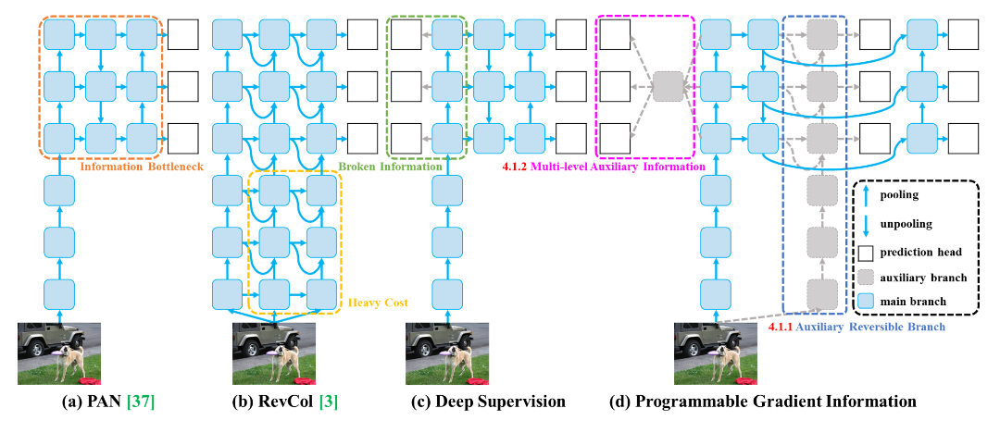
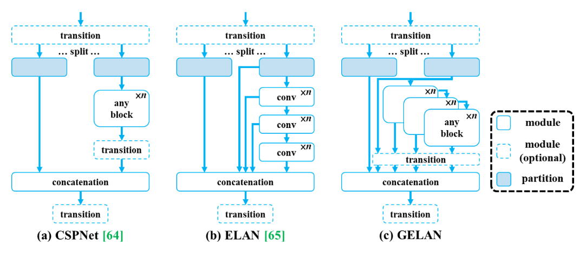

Appendix A — YOLOv9
YOLOv9, the latest iteration in the YOLO (You Only Look Once) series of object detection models, published in February 2024, represents a significant advancement in the field of computer vision. Building upon the strengths of predecessors models, Wang and colleagues in the paper titled “YOLOv9: Learning What You Want to Learn Using Programmable Gradient Information” introduce novel methodologies and enhancements aimed at improving detection accuracy, speed, and efficiency. With a focus on addressing data loss through an information bottleneck, incorporating programmable gradient information for reliable weight updates, and integrating Generalized ELAN (GELAN) [1] for enhanced feature extraction. YOLOv9 stands at the forefront of cutting-edge object detection technology. This introduction sets the stage for exploring the innovations that define YOLOv9 as a state-of-the-art solution for object detection tasks.
A.1 Information Bottleneck
A.1.1 Addresses Data Loss
YOLOv9 tackles the issue of data loss during deep network transmission by introducing the concept of an information bottleneck. This bottleneck aims to minimize the loss of information as data passes through the network layers.
According to information bottleneck principle [1], we know that data \(X\) may cause information loss when going through transformation, as shown below:
\[ I(X,X) \ge I(X, f_{\theta}(X)) \ge I(X, g_{\phi}(f_{\theta}(X))) \]
The authors stated that as the number of network layer increases, the original data have high probability to be lost.
A.1.2 Reversible Function
Implementing a reversible function helps maintain the integrity of data during processing, ensuring that information is not lost in the network’s computations.
When the network utilizes a composition of reversible functions in its transformation process, it leads to the acquisition of more dependable gradients for model updates. The majority of contemporary deep learning techniques adhere to the reversible property in their architectures, ensuring robust gradient information for effective model optimization, such as:
\[ X^{l+1} = X^l + f_{\theta}^{l+1} (X^l) \]
A.2 Programmable Gradient Information (PGI)
Reliable Gradient Information: PGI is introduced to ensure reliable gradient information is available for updating network weights. By providing complete input information for target tasks, PGI facilitates accurate gradient calculations essential for weight updates. Update Network Weights: The availability of reliable gradient information through PGI enables effective updating of network weights, enhancing the learning process and model performance. Auxiliary
A.3 Reversible Branch
YOLOv9 incorporates an auxiliary reversible branch to further optimize gradient information flow and improve the overall training process.

A.4 Generalized ELAN (GELAN)
CSPNet + ELAN: GELAN combines CSPNet with ELAN to enhance feature extraction and improve model efficiency. This fusion allows for more effective utilization of parameters and computational resources within the network architecture. Gradient Path Planning: GELAN’s architecture focuses on gradient path planning to optimize information flow and ensure that gradient updates are efficiently utilized throughout the network, leading to improved performance in object detection tasks.

Utilizing Progressive Group Integration (PGI) to address the information bottleneck challenge and mitigate the incompatibility of deep supervision mechanisms with lightweight neural networks. Wang and colleagues developed GELAN, a notably efficient and lightweight neural network. The integration of PGI and GELAN in the creation of YOLOv9 has demonstrated competitive effectiveness. Noteworthy for its superior design, YOLOv9 achieves a reduction of 49% in parameter count and 43% in computational workload compared to YOLOv8, while concurrently exhibiting a 0.6% Average Precision (AP) [1] enhancement on the MS COCO dataset.